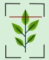
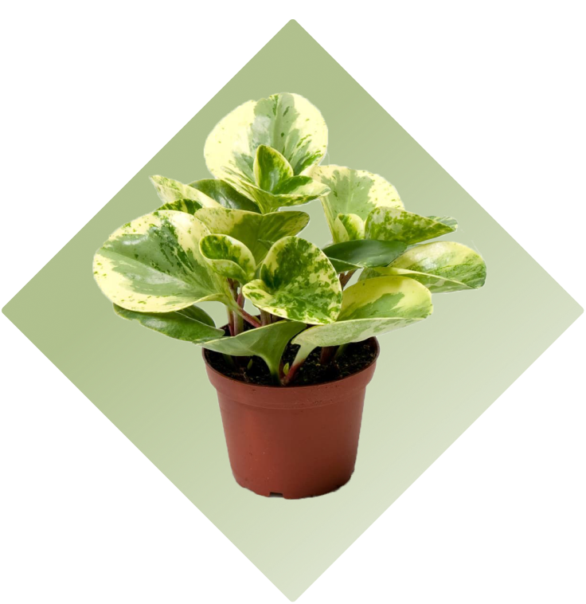

AyurVision
Turning Leaves into Lifelines
About Us
Solution
How it Works
FAQs
How It Works
Our goal is to preserve Ayurvedic wisdom across generations. Users can upload plant images for ML-based plant identification. We provide care tips, propagation guidance, and usage/symptom information. Users can also search for plants by name or disease. We connect city dwellers with local farmers via ayurvedic store wholesaler and offer subscription options (weekly, monthly, one-time purchase).